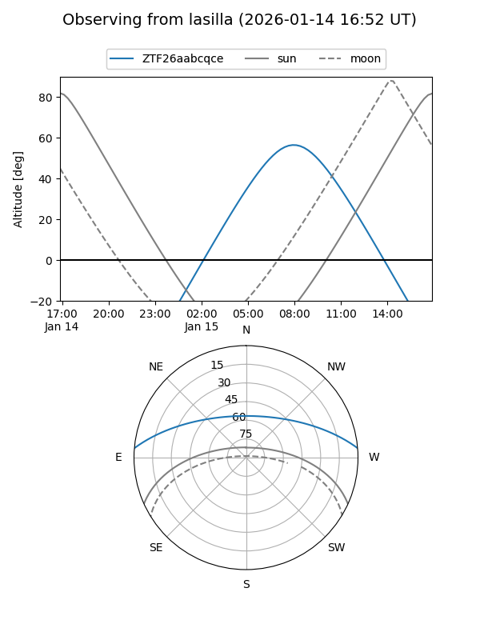
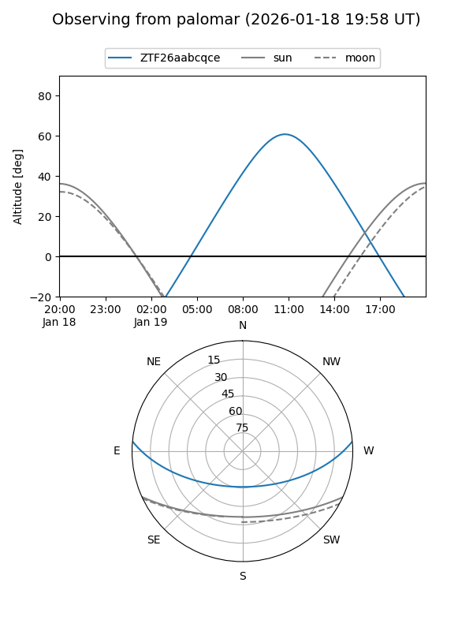

ZTF26aabcqce
Target ZTF26aabcqce at 2026-01-18 21:16
Aliases and brokers:
FINK: link
Lasair: link
ALeRCE: link
alt names
ZTF26aabcqce (ztf,fink_ztf)
Coordinates:
equatorial (ra, dec) = 162.9315,+4.36231
equatorial (HMS+DMS) = 10:51:43.57,+04:21:44.32
galactic (l, b) = (246.1970,+53.49072)
Flags:
Photometry:
last ztfg=20.17
1 ztfg detections
Lightcurve

Visibility


Additional plots